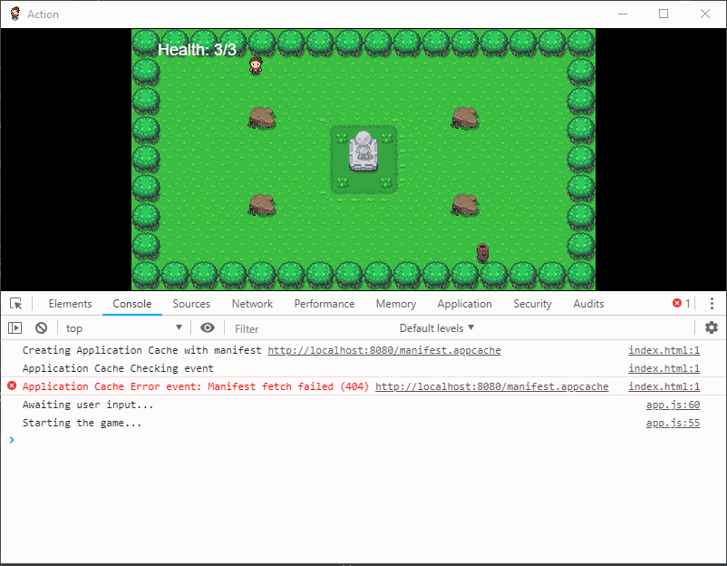
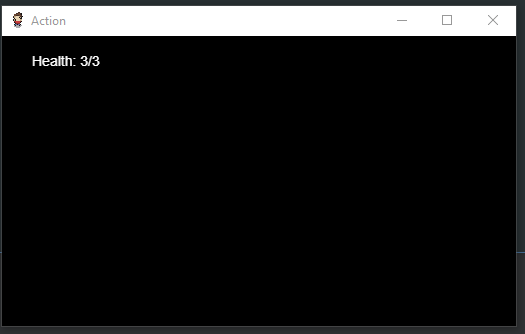

Summary
Sometimes you need a program to run for longer than just a single event or the life span of a sprite to create things like HUDs and Weather Effects.
Enter the Run Time Program, always running, always updating, and it will not stop, until it is stopped!
When and when not to use them
Use them for
- Long lived programs, that need to run across board environments.
- Things like Graphical UIs are a good application of them.
- HUDs are a common use case.
- Weather, Day & Night cycles, Clocks, etc.
- Anything that is constantly happening in your game!
Don't use them for
- Short lived things, that only happen in very specific circumstances.
- Instead try to use Events or Sprite Threads if possible.
Key things about Run Time Programs
- Don't use rpgcode.endProgram in programs meant for Run Time.
- Run Time Programs are constantly being executed start to finish by the engine.
- Instead use control variables to ensure executions don't overlap.
- Run Times will keep being called until they are destroyed.
- Its good practice to destroy a Run Time program once you are done with it.
- Slow running Run Times will slow the engine down!
- Stick to simple calculations to avoid game slowdowns.
- Or put things on delayed callbacks so they don't execute often.
- If you want to prevent a Run Time from executing use return.
- Use the JavaScript return; statement at the highest level of the Run Time.
- When nested in functions, use a chain of return statements.
Example Usage
Character Health
One of the most common applications for a Run Time is something like a HUD, which typically tells the player in realtime important stats about their current health, ammo, magic power, etc.
We are going to create a basic yet functional HUD program that displays the character's current health.

The Code
For the most basic version of this program all we need to do is the following:
- Get the current character.
- Clear the current screen.
- Draw the health back to the screen.
To achieve this all we need is a couple of lines of code:
// NOTE: You don't need to use endProgram for a Run Time, they are always running!
// 1: Get the current character
const character = rpgcode.getCharacter();
// 2: Draw the current character's health to the screen.
rpgcode.clearCanvas();
rpgcode.setColor(255, 255, 255, 1);
rpgcode.drawText(30, 30, "Health: " + character.health + "/" + character.maxHealth);
rpgcode.renderNow();
If you run this program you should end up with something like this:

Running at Startup
The next thing we want to do is get this program running constantly in the background displaying changes to the character's health as they occur.
To achieve this you'll need to add the following to your Startup program, make sure to pass the name you gave your program!
// Add this into your Startup program
rpgcode.addRunTimeProgram("health.js");
This tells the engine that you want this particular program to run in the background constantly until you tell it to stop.
If you play your game now you should see the health counter at the top. Open a console using F12 you can run the following to test it out:
rpgcode.getCharacter().health -= 1;
Removing a Run Time Program
To remove a Run Time from the engine simply call:
rpgcode.removeRunTimeProgram("health.js");
Optimising our Run Time Program
We can optimise our HUD drawing code by only updating the screen when the health has actually changed since the last check.
To do this we'll introduce a Global named "lastHealth", this will be used to store the last health value of the character. We can check against our previous value stored in the Global and decide whether or not the screen needs updating.
If the health doesn't need updating we can simply use the return statement to make sure the Run Time Program stops executing.
// NOTE: You don't need to use endProgram for a Run Time, they are always running!
// 1: Get the current character
const character = rpgcode.getCharacter();
// 2: Check to see if our Global exists yet
if (rpgcode.getGlobal("lastHealth")) {
// 2a: It does now check to see if it has changed since last time
if (rpgcode.getGlobal("lastHealth") === character.health) {
// There is no change, leave the Run Time Program
return;
} else {
// There is a change update it
rpgcode.setGlobal("lastHealth", character.health);
}
} else {
// 2c: Global doesn't exist, record the current character health
// will check against it next time
rpgcode.setGlobal("lastHealth", character.health);
}
// 3: Draw the current character's health to the screen.
// Will only reach here if the health has actually changed
rpgcode.clearCanvas();
rpgcode.setColor(255, 255, 255, 1);
rpgcode.drawText(30, 30, "Health: " + character.health + "/" + character.maxHealth);
rpgcode.renderNow();
More Advanced Examples
You can find a number of examples of how to use Run Time programs for Weather, Day & Night, to HUDs scattered across the demo games, here is a short list of the most interesting ones: